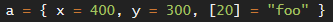

Hallo!
Dies ist eine Projektseite über den Lernprozess von Lua und das Game Framework Löve2d
Hallo!
Dies ist eine Projektseite über den Lernprozess von Lua und das Game Framework Löve2d
„Eine Einführung in die Programmiersprache Lua und das dazugehörige Game Framework Löve2d.“

Variablen werden in Lua ohne eine Vorhut wie „var“ oder „$“ definiert. Lokale Variablen jedoch müssen mit einem „local“ versehen werden, damit sie von lua als lokale Variable erkannt wird.
Dies ist ein Ausschnitt der wichtigsten Lua Operatoren. Mit # kann die Anzahl Elemente eines Tables oder Arrays ausgegeben werden.

Dies ist eine normale While Schleife. Print gibt den Wert von i auf den Bildschirm aus.

Dies ist eine Repeat Schleife. Sie läuft solange, bis die Aussage wahr wird.

Der Aufbau einer numerischen For Schleife.

Beispiel für eine numerische For Schleife.
Diese Funktion tut etwas, wenn etwas ist und mit einem else kann etwas gemacht werden, wenn dem nicht so ist. Es kann ausserdem mit else und elseif gearbeitet werden.
Generische For Schleifen arbeiten mit Tables oder Arrays.


Generische For Schleife mit „pairs“ gibt den Key und den Wert eines Items zurück.

Generische For Schleife mit „ipairs“ kann nur für Items mit Indexen benutzt werden(Arrays) und geht dann einfach durch alle Items durch bis es beim letzten Item angekommen ist und gibt die Werte zurück.
Aufbau einer Funktion in Lua.

Beispiel einer Funktion in Lua.

Erstellen eines leeren Tables.
Table mit Daten.

Ausgeben von Worten in einem Table.

Erstellen und verändern der Werte eines Arrays. Jeder Wert bekommt einen Index zugewiesen startend bei 1.
Ausgeben der Werte eines Arrays. Mit # werden die Anzahl Werte in einem Array ausgegeben.
Verschiedene Funktionen um mit Werten in Tables zu arbeiten.

Verschiedene Funktionen um mit Strings zu arbeiten.


Love.load, Love.update und Love.draw sind die drei Hauptfunktionen eines Love2D Programmes. In ihnen wird ein grosser Teil des Programmes geschrieben.